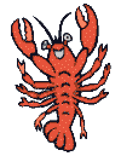

Yes, I did buy a giant stuffed lobster. Although an impulsive purchase, it's
one I do not regret. I had gotten it on a trip to Massachusetts that I went
on this past summer with some highschool friends. We had went to visit our online friends
in their hometowns for the first time.
Growing up I had always been warned by my parents to "stay away from strangers"
online, so I never really had the experience of befriending people online.
But eventually, long story
short, some of my high school friends had their own set of online friends
that they met through video games and, as you might have guessed,
they eventually became my online friends too.
And so, as my first online friends I've ever made,
although we have all met up in person before multiple times, going on this trip
and getting to stay at their homes was almost
like a turning point in breaking that "online" label of our friendships to
be able. On the trip, we got to visit our online friends in their hometowns, meet their family,
hang out together in places familiar to them but so foreign to us, and
to experience the way they have grown up this whole time. It's a trippy
experience to say the least.
But of course you're wondering how a lobster has anything to do with this right?
Well, not too far from one of our online friend's house was a boardwalk near a beach
that we ended up visiting multiple times. On the last day before me and my
highschool friends had to leave, we visited the souvenir shop on this boardwalk
(hence the photos of the ceramic ducks), which is where I laid my eyes on
an extremely obnoxiously giant stuffed lobster. And, obviously as one does,
I bought it immediately.
But what has made use as a good comfy pillow has also served as a wholesome
reminder of my online friends and my highschool friends and the first trip
we went on together :)
Click on the dots to scroll through photos from the trip!
This video reminds me of my stuffed lobster. Enjoy.
